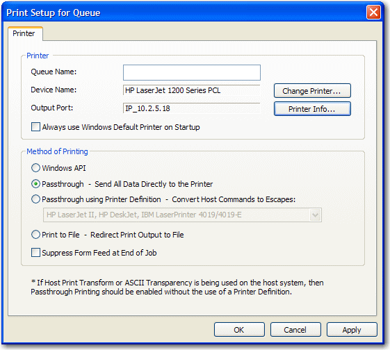

The first time you launch TCP/IP Print Server, the Print Setup for Queue dialog opens:
Figure 1. Print Setup for Queue dialog

You must type a Queue Name before
you can start a BlueZone TCP/IP Print Server session.
Also, take a moment to select a different printer if necessary,
and decide if you always want to use your Windows default printer
when the BlueZone TCP/IP Print Server application starts.
Note: Once BlueZone TCP/IP Print Server is configured, launching
the BlueZone TCP/IP Print Server application causes the application
to automatically launch in the Windows System Tray without appearing
on the Windows desktop.
Type a Queue Name and click OK.
The Print Setup for Queue dialog closes. Before you start
the BlueZone TCP/IP Print Server, you should configure a session.